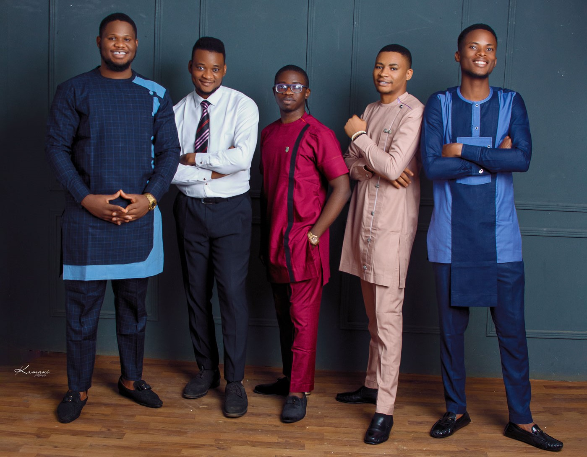

On This Day
The date being 11th june 2021, Unn remembered her 2019 graduates
We were finally Convocated even though dem no rate us, why would i say that. because lectures,
test and exams were still being held on our convocation instead of lecture free day to allow studends to fully attend
